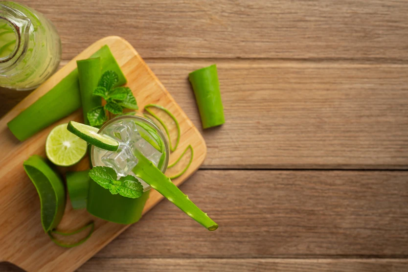
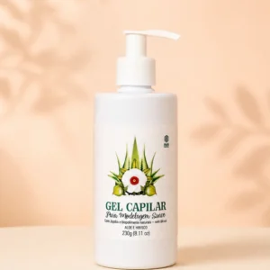

multivegetal Seu cabelo não precisa de mais um produto solto. Precisa de uma rotina que faça sentido.
Social media · Conteúdo · Estratégia digital
Conteúdo com função. Cuidado que vira confiança.
Uma proposta para transformar a presença da Multi Vegetal em uma comunicação mais intencional - capaz de educar, demonstrar, aproximar pessoas e conduzir a compra.
Leitura construída a partir do histórico de pedidos, comportamento do site, produtos e informações comerciais enviados.
VS Content Lab / Multi VegetalConceito ativo
O diagnóstico já mostra onde o conteúdo pode ganhar força.Indicadores do relatório inicial
R$ 170-190faixa de ticket médio observada por pedido
3 itensmédia aproximada em pedidos recentes
Kits & rotinastendem a gerar mais faturamento que itens isolados
Leitura do cenário
A marca já tem produto, história e procura. O próximo salto é organizar a narrativa.
A oportunidade não está em publicar mais por publicar, mas em fazer cada conteúdo ocupar um papel claro na jornada de compra.
Educar
Gera clareza
Traduzir cabelo, pele, ativos e hábitos em orientação simples.
Mostrar a rotina
Amplia valor
Conectar produtos em combinações que resolvem uma necessidade.
Construir prova
Cria confiança
Usar aplicação, textura, experiência e resultado para reduzir objeções.
Aproximar pessoas
Gera conexão
Trazer presença humana e uma comunicação mais direta.
Conduzir a compra
Move a jornada
Fazer o interesse avançar até a descoberta do produto e do kit certo.
Esta leitura sustenta a proposta comercial. Personas, pilares, tom de voz, calendário e estratégia detalhada serão construídos após a contratação do plano correspondente.
Mockups de direção
Um produto pode aparecer de muitas formas. A função do conteúdo decide como.
Explore cinco recortes iniciais. Eles demonstram a linguagem e o potencial da operação - não substituem a estratégia que será desenvolvida no plano completo.
Conteúdo educativo
Hidratação, nutrição ou restauração?
Salvável · educativo · descoberta
Entender a necessidade vem antes de escolher o produto. Um guia visual aproxima a marca de quem ainda está descobrindo sua rotina.
Função ativaGerar clareza e salvamentos


Captação presente nos três planos
Uma biblioteca visual para alimentar diferentes formatos.
A produção explora produtos, pessoas, ambientes, gestos, texturas e cenas de rotina. O objetivo é sair da sessão com material versátil - não apenas com fotos bonitas.
Fotos de produto e lifestyle
Reels e vídeos narrados
Aplicação e demonstração
Detalhes e texturas
Cenas de rotina
Institucionais e campanhas
Modelo flexível: não existe limite fixo de horas, fotos ou vídeos. A quantidade acompanha a necessidade da produção e as possibilidades criativas encontradas no trabalho.
A estratégia completa começa depois do sim.
Esta proposta mostra a direção e as oportunidades. O aprofundamento transforma essas hipóteses em sistema de trabalho.
Definições baseadas no negócio, no público e na leitura dos resultados.
Critérios para uma comunicação coerente e reconhecível.
Organização do que dizer, por que dizer e em qual momento.
Apresentação comercial conectada às necessidades de cuidado.
Conteúdos com papel definido ao longo da jornada.
Aprendizado contínuo para orientar as próximas decisões.
O detalhamento desses pontos faz parte da etapa estratégica do plano Captação + Programação + Branding.
Três níveis de parceria
Escolha até onde a operação deve avançar.
Da produção pontual ao acompanhamento estratégico completo, os planos crescem sem duplicar entregas.
Plano 01
Captação
Para produzir conteúdo profissional sem incluir o planejamento e a programação mensal das publicações.
R$ 800
Captação de fotos e vídeos
Direção criativa
Demonstrações e aplicações
Produto, lifestyle e rotina
Edição dos materiais
Entrega dos conteúdos finais
Plano 02
Captação + Programação
Produção e organização mensal para dar consistência à presença digital da marca.
R$ 1.300/ mês
Tudo do plano anterior
Planejamento mensal e temas
Calendário editorial
Criação de legendas
Organização do feed
Direcionamento por objetivo
Até 12 conteúdos programados/mês
Plano 03Recomendado
Captação + Programação + Branding
Uma operação completa para produzir, planejar, posicionar e evoluir a comunicação da marca.
R$ 1.800/ mês
Tudo dos planos anteriores
Personas, público e comportamento
Pilares, voz e posicionamento
Estratégia de produto, kits e rotinas
Atração, conversão e direção comercial
Conteúdo com presença humana e autoridade
Análise e ajustes estratégicos mensais
Até 16 conteúdos programados/mês
Comparativo
O que muda entre os planos.
A captação é a base comum. Planejamento e estratégia entram conforme o nível de acompanhamento.
| Entrega | Captação | + Programação | + Branding |
|---|---|---|---|
| Fotos, vídeos, direção e edição | Sim | Sim | Sim |
| Vídeos narrados e demonstrações | Sim | Sim | Sim |
| Planejamento e calendário editorial | - | Sim | Sim |
| Legendas e organização do feed | - | Sim | Sim |
| Conteúdos programados | - | Até 12/mês | Até 16/mês |
| Personas, pilares e tom de voz | - | - | Sim |
| Branding e posicionamento | - | - | Sim |
| Estratégia comercial, kits e rotinas | - | - | Sim |
| Análise e ajustes estratégicos | - | - | Sim |
| Conteúdo direto para a câmera | - | - | Sim |
Participações de convidados dependem de disponibilidade e pertinência para o conteúdo.
Conteúdo com intenção.
Estética com propósito.
Estratégia voltada para resultado.
Entender
O que a marca precisa comunicar, para quem e por quê.
Transformar
Produtos e informações em conteúdo claro, visual e útil.
Integrar
Fotografia, vídeo, texto, identidade e estratégia trabalhando juntos.
Evoluir
Usar a resposta do público para orientar os próximos ciclos.
Vamos transformar cuidado natural em uma presença que gera confiança?
O plano completo une produção, consistência e estratégia para construir uma comunicação que evolui todos os meses.